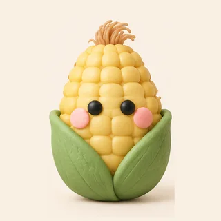
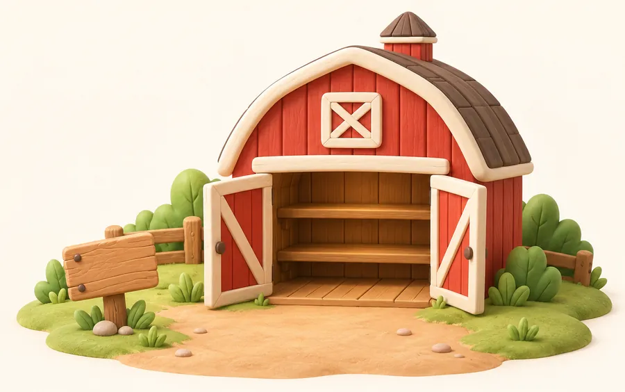

米說
米說
0 則文字稿
還沒設定 OpenAI API Key
沒設也能先錄，錄好的會等在待轉錄。點這裡去設定。
0
本週收成
0
待轉錄
待轉錄
✕

匯入音檔
匯出全部文字稿
穀倉
設定
文字稿
口語稿
複製
重新潤飾
穀倉

每完成一篇文字稿，就收成一根玉米。錄不到一分鐘是嫩玉米，每第 10 根是金玉米。刪掉文字稿不會把玉米拿走。
累計
收成
0 根
錄音時間
0 分鐘
連續錄音
0 天
設定
OpenAI
API Key
儲存並驗證
轉錄和潤飾都用這把，只存在這支手機裡，不會送到 OpenAI 以外的地方。
去申請
潤飾
模型
5.4 mini
4o mini
自訂詞彙
潤飾提示詞
預設
還原預設
5.4 mini 分段和修錯字比較好，每 10 分鐘錄音的潤飾約 NT$0.4；4o mini 便宜約五倍，但常整篇擠成一大段。
使用習慣
潤飾完自動複製
錄音時保持螢幕亮著
文字大小
小
中
大
外觀
淺色
深色
自動
iPhone 鎖螢幕或切到別的 App 時，瀏覽器會停掉麥克風。錄長一點的內容，請開著「保持螢幕亮著」。中途被打斷的話，已錄到的部分會留在待轉錄。
資料
匯出備份
匯入備份
文字稿存在這支手機裡。換手機、刪掉主畫面圖示或清除 Safari 資料前，先匯出備份。備份不含 API Key。
關於
聯絡多米
請多米喝杯咖啡
版本
錄音直接送到 OpenAI 轉錄，文字稿直接送到 OpenAI 潤飾，中間沒有任何其他伺服器。
00:00
打開這篇
關閉
取消